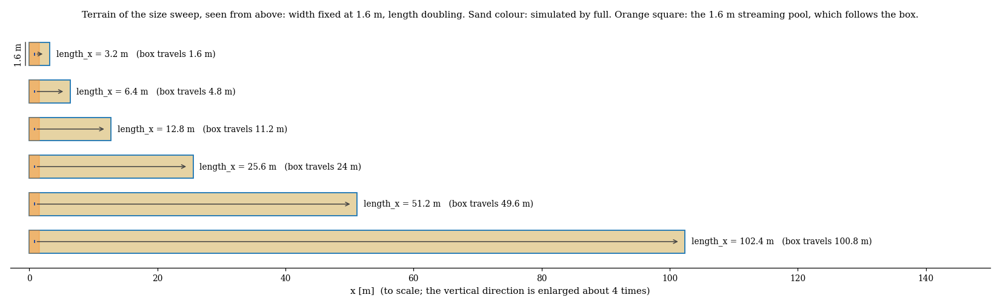
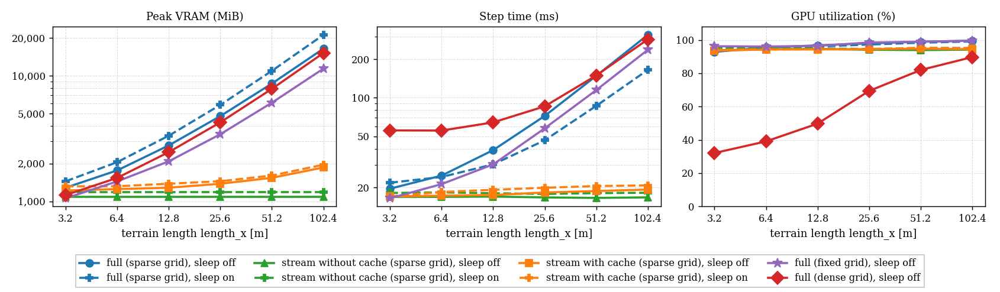
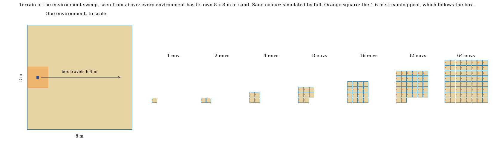
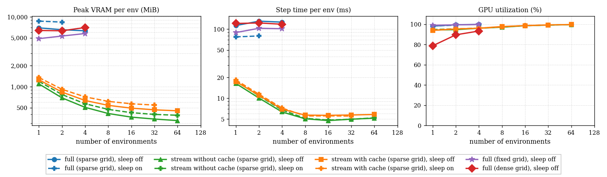
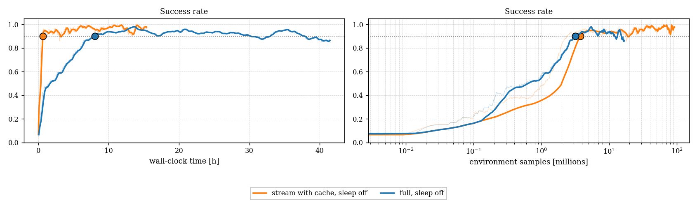
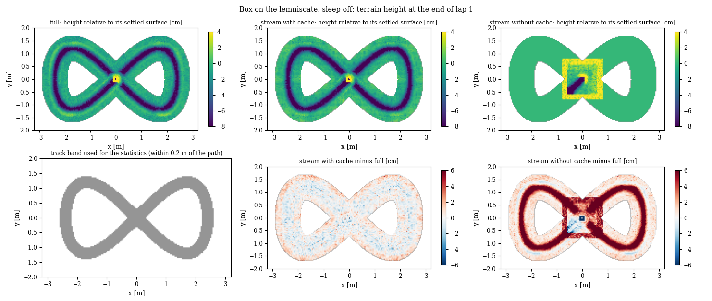
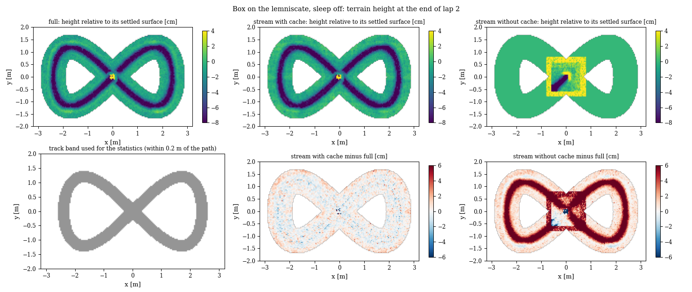
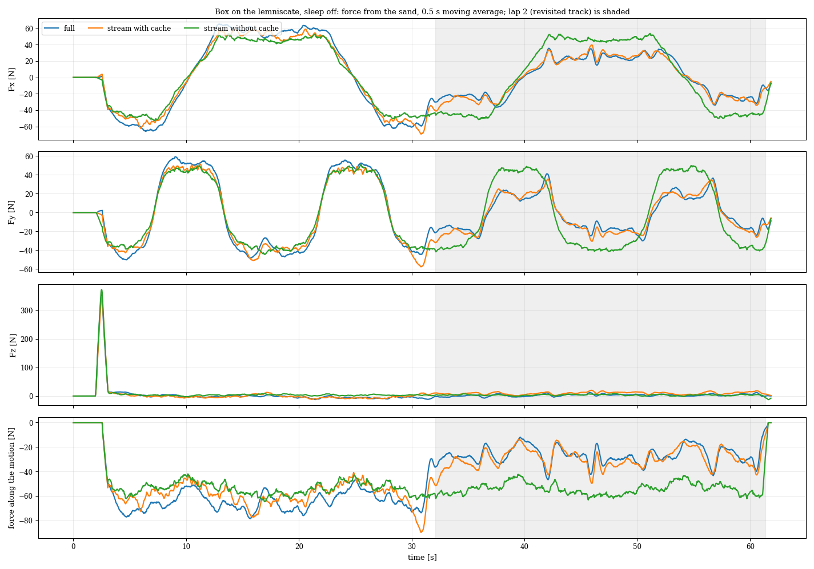
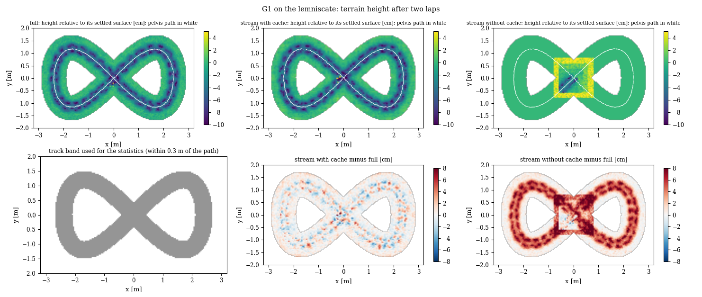

A rigid box on a PD-driven gantry is moved through MPM sand in six modes: sleep off or on, times three ways of managing the terrain.
Every result is unchecked.


| terrain | sleep | length_x [m] | status | particles | peak VRAM [MiB] | step mean [ms] | step p95 [ms] | physics [ms] | GPU util mean / max [%] | timed steps | asleep / support / awake |
|---|---|---|---|---|---|---|---|---|---|---|---|
| full | off | 3.2 | ok | 98,758 | 1,286 | 19.6 | 20.2 | 19.1 | 93 / 95 | 221 | |
| full | off | 6.4 | ok | 196,779 | 1,766 | 24.8 | 25.6 | 24.0 | 95 / 96 | 381 | |
| full | off | 12.8 | ok | 393,558 | 2,790 | 39.1 | 40.3 | 38.7 | 97 / 98 | 701 | |
| full | off | 25.6 | ok | 786,379 | 4,772 | 72.2 | 73.8 | 71.4 | 98 / 99 | 1,341 | |
| full | off | 51.2 | ok | 1,572,758 | 8,662 | 148.1 | 150.6 | 149.6 | 99 / 100 | 2,621 | |
| full | off | 102.4 | ok | 3,144,779 | 16,410 | 309.1 | 321.7 | 317.3 | 100 / 100 | 5,181 | |
| full | on | 3.2 | ok | 98,758 | 1,446 | 21.8 | 22.9 | 20.4 | 95 / 96 | 221 | 51,470 / 23,924 / 23,364 |
| full | on | 6.4 | ok | 196,779 | 2,054 | 24.2 | 26.5 | 23.1 | 95 / 96 | 381 | 148,477 / 27,653 / 20,649 |
| full | on | 12.8 | ok | 393,558 | 3,334 | 30.3 | 40.3 | 29.9 | 96 / 97 | 701 | 339,302 / 28,642 / 25,614 |
| full | on | 25.6 | ok | 786,379 | 5,860 | 46.7 | 71.5 | 50.3 | 97 / 99 | 1,341 | 734,958 / 26,660 / 24,761 |
| full | on | 51.2 | ok | 1,572,758 | 10,934 | 86.5 | 100.0 | 98.2 | 98 / 100 | 2,621 | 1,520,962 / 25,802 / 25,994 |
| full | on | 102.4 | ok | 3,144,779 | 21,146 | 164.9 | 171.9 | 199.6 | 99 / 100 | 5,181 | 3,093,921 / 30,335 / 20,523 |
| stream without cache | off | 3.2 | ok | 49,379 | 1,094 | 16.9 | 18.4 | 16.2 | 94 / 94 | 221 | |
| stream without cache | off | 6.4 | ok | 49,379 | 1,094 | 16.9 | 18.0 | 16.0 | 94 / 96 | 381 | |
| stream without cache | off | 12.8 | ok | 49,379 | 1,094 | 17.0 | 18.4 | 16.1 | 95 / 96 | 701 | |
| stream without cache | off | 25.6 | ok | 49,379 | 1,094 | 16.8 | 18.1 | 15.8 | 94 / 95 | 1,341 | |
| stream without cache | off | 51.2 | ok | 49,379 | 1,094 | 16.6 | 17.3 | 16.0 | 94 / 95 | 2,621 | |
| stream without cache | off | 102.4 | ok | 49,379 | 1,094 | 16.8 | 17.6 | 16.1 | 94 / 96 | 5,181 | |
| stream without cache | on | 3.2 | ok | 49,379 | 1,190 | 18.1 | 19.2 | 17.1 | 95 / 96 | 221 | 0 / 15 / 27,763 |
| stream without cache | on | 6.4 | ok | 49,379 | 1,190 | 18.4 | 19.3 | 17.5 | 95 / 96 | 381 | 0 / 400 / 27,380 |
| stream without cache | on | 12.8 | ok | 49,379 | 1,190 | 18.0 | 19.4 | 17.1 | 95 / 97 | 701 | 0 / 7 / 27,773 |
| stream without cache | on | 25.6 | ok | 49,379 | 1,190 | 17.8 | 18.6 | 17.2 | 95 / 96 | 1,341 | 0 / 118 / 27,662 |
| stream without cache | on | 51.2 | ok | 49,379 | 1,190 | 18.1 | 19.7 | 17.2 | 95 / 96 | 2,621 | 0 / 20 / 27,758 |
| stream without cache | on | 102.4 | ok | 49,379 | 1,190 | 18.2 | 19.6 | 17.5 | 95 / 97 | 5,181 | 0 / 393 / 27,387 |
| stream with cache | off | 3.2 | ok | 63,261 | 1,222 | 17.0 | 18.7 | 15.9 | 94 / 95 | 221 | |
| stream with cache | off | 6.4 | ok | 63,261 | 1,254 | 17.3 | 18.6 | 16.7 | 94 / 95 | 381 | |
| stream with cache | off | 12.8 | ok | 63,261 | 1,286 | 17.5 | 19.1 | 16.4 | 94 / 95 | 701 | |
| stream with cache | off | 25.6 | ok | 63,261 | 1,382 | 18.3 | 19.3 | 16.7 | 95 / 95 | 1,341 | |
| stream with cache | off | 51.2 | ok | 63,261 | 1,542 | 18.8 | 20.2 | 16.3 | 95 / 95 | 2,621 | |
| stream with cache | off | 102.4 | ok | 63,261 | 1,862 | 19.3 | 21.2 | 16.7 | 94 / 96 | 5,181 | |
| stream with cache | on | 3.2 | ok | 63,261 | 1,320 | 17.1 | 19.7 | 16.4 | 94 / 96 | 221 | 653 / 4,163 / 28,077 |
| stream with cache | on | 6.4 | ok | 63,261 | 1,320 | 18.5 | 21.3 | 17.3 | 94 / 96 | 381 | 110 / 2,541 / 31,244 |
| stream with cache | on | 12.8 | ok | 63,261 | 1,384 | 19.2 | 21.3 | 18.1 | 94 / 96 | 701 | 1,637 / 4,004 / 28,374 |
| stream with cache | on | 25.6 | ok | 63,261 | 1,448 | 19.9 | 22.0 | 18.1 | 94 / 97 | 1,341 | 98 / 1,922 / 31,988 |
| stream with cache | on | 51.2 | ok | 63,261 | 1,608 | 20.5 | 22.4 | 18.2 | 95 / 96 | 2,621 | 539 / 3,446 / 30,145 |
| stream with cache | on | 102.4 | ok | 63,261 | 1,960 | 20.8 | 22.3 | 18.1 | 95 / 96 | 5,181 | 46 / 2,425 / 31,741 |
| length_x [m] | sleep | slots: peak / allocated | records: peak / allocated | tiles: peak / allocated | slot multiplier |
|---|---|---|---|---|---|
| 3.2 | off | 58,069 / 63,261 | 55,979 / 73,062 | 144 / 180 | 1.10 |
| 6.4 | off | 58,830 / 63,261 | 169,266 / 187,110 | 288 / 340 | 1.10 |
| 12.8 | off | 59,014 / 63,261 | 397,188 / 415,206 | 576 / 660 | 1.10 |
| 25.6 | off | 59,132 / 63,261 | 853,290 / 871,398 | 1,152 / 1,300 | 1.10 |
| 51.2 | off | 59,159 / 63,261 | 1,765,680 / 1,783,782 | 2,304 / 2,580 | 1.10 |
| 102.4 | off | 59,104 / 63,261 | 3,590,516 / 3,608,550 | 4,608 / 5,140 | 1.10 |
| 3.2 | on | 58,067 / 63,261 | 55,981 / 73,062 | 144 / 180 | 1.10 |
| 6.4 | on | 58,863 / 63,261 | 169,233 / 187,110 | 288 / 340 | 1.10 |
| 12.8 | on | 58,993 / 63,261 | 397,199 / 415,206 | 576 / 660 | 1.10 |
| 25.6 | on | 59,064 / 63,261 | 853,359 / 871,398 | 1,152 / 1,300 | 1.10 |
| 51.2 | on | 59,161 / 63,261 | 1,765,677 / 1,783,782 | 2,304 / 2,580 | 1.10 |
| 102.4 | on | 59,215 / 63,261 | 3,590,339 / 3,608,550 | 4,608 / 5,140 | 1.10 |
| length_x [m] | sparse: peak VRAM [MiB] / step [ms] | fixed: peak VRAM [MiB] / step [ms] | dense: peak VRAM [MiB] / step [ms] |
|---|---|---|---|
| 3.2 | 1,286 / 19.6 | 1,060 / 16.5 | 1,124 / 55.7 |
| 6.4 | 1,766 / 24.8 | 1,444 / 21.3 | 1,540 / 55.6 |
| 12.8 | 2,790 / 39.1 | 2,084 / 30.3 | 2,468 / 64.3 |
| 25.6 | 4,772 / 72.2 | 3,426 / 57.8 | 4,258 / 85.8 |
| 51.2 | 8,662 / 148.1 | 6,100 / 114.8 | 7,860 / 149.2 |
| 102.4 | 16,410 / 309.1 | 11,384 / 236.2 | 15,160 / 285.2 |
All six modes above use the sparse grid, the value the tasks set. The fixed grid is the better setting for full without sleeping (14 to 24% less step time, 18 to 31% less memory), but sleeping requires the sparse grid. With the dense grid the solver cannot be captured as a CUDA graph: it is 2 to 3 times slower than sparse on short terrain, where the step waits on the host, and about level with sparse from 51.2 m. One run each.



| terrain | sleep | largest count that ran | first failure |
|---|---|---|---|
| full | off | 4 | 8 (oom) |
| full | on | 2 | 4 (oom) |
| stream without cache | off | 64 | 128 (oom) |
| stream without cache | on | 64 | 128 (oom) |
| stream with cache | off | 64 | 128 (oom) |
| stream with cache | on | 32 | 64 (oom) |
| terrain | sleep | envs | status | particles | peak VRAM [MiB] | VRAM per env [MiB] | step mean [ms] | step p95 [ms] | step per env [ms] | physics per env [ms] | GPU util mean / max [%] | timed steps | asleep / support / awake |
|---|---|---|---|---|---|---|---|---|---|---|---|---|---|
| full | off | 1 | ok | 1,227,116 | 6,960 | 6,960 | 112.8 | 117.7 | 112.83 | 112.19 | 98 / 100 | 461 | |
| full | off | 2 | ok | 2,454,232 | 13,100 | 6,550 | 261.4 | 270.6 | 130.69 | 129.18 | 100 / 100 | 461 | |
| full | off | 4 | ok | 4,908,464 | 25,284 | 6,321 | 505.7 | 516.1 | 126.43 | 126.87 | 100 / 100 | 461 | |
| full | off | 8 | FAILED (oom) | ||||||||||
| full | on | 1 | ok | 1,227,116 | 8,688 | 8,688 | 77.4 | 117.5 | 77.38 | 76.76 | 98 / 99 | 461 | 1,147,595 / 50,410 / 29,111 |
| full | on | 2 | ok | 2,454,232 | 16,844 | 8,422 | 159.7 | 263.3 | 79.84 | 78.25 | 99 / 100 | 461 | 2,314,146 / 84,172 / 55,914 |
| full | on | 4 | FAILED (oom) | ||||||||||
| stream without cache | off | 1 | ok | 49,379 | 1,094 | 1,094 | 16.4 | 17.0 | 16.39 | 15.72 | 94 / 95 | 461 | |
| stream without cache | off | 2 | ok | 98,758 | 1,382 | 691 | 20.2 | 21.2 | 10.09 | 9.77 | 95 / 96 | 461 | |
| stream without cache | off | 4 | ok | 197,516 | 2,022 | 506 | 25.4 | 26.4 | 6.34 | 6.16 | 96 / 97 | 461 | |
| stream without cache | off | 8 | ok | 395,032 | 3,302 | 413 | 40.4 | 41.9 | 5.05 | 4.96 | 97 / 98 | 461 | |
| stream without cache | off | 16 | ok | 790,064 | 5,862 | 366 | 76.2 | 78.3 | 4.76 | 4.70 | 99 / 99 | 461 | |
| stream without cache | off | 32 | ok | 1,580,128 | 11,000 | 344 | 159.5 | 162.3 | 4.99 | 4.97 | 99 / 100 | 461 | |
| stream without cache | off | 64 | ok | 3,160,256 | 20,924 | 327 | 330.3 | 334.0 | 5.16 | 5.14 | 100 / 100 | 461 | |
| stream without cache | off | 128 | FAILED (oom) | ||||||||||
| stream without cache | on | 1 | ok | 49,379 | 1,190 | 1,190 | 17.8 | 18.6 | 17.79 | 17.13 | 95 / 96 | 461 | 0 / 33 / 27,723 |
| stream without cache | on | 2 | ok | 98,758 | 1,542 | 771 | 21.7 | 22.6 | 10.85 | 10.47 | 95 / 97 | 461 | 0 / 16 / 55,496 |
| stream without cache | on | 4 | ok | 197,516 | 2,278 | 570 | 27.1 | 28.2 | 6.78 | 6.63 | 96 / 97 | 461 | 0 / 33 / 110,991 |
| stream without cache | on | 8 | ok | 395,032 | 3,782 | 473 | 41.0 | 42.8 | 5.13 | 5.04 | 97 / 98 | 461 | 0 / 117 / 221,931 |
| stream without cache | on | 16 | ok | 790,064 | 6,790 | 424 | 77.5 | 80.2 | 4.84 | 4.80 | 99 / 99 | 461 | 0 / 288 / 443,808 |
| stream without cache | on | 32 | ok | 1,580,128 | 12,824 | 401 | 159.3 | 164.3 | 4.98 | 4.95 | 99 / 100 | 461 | 0 / 562 / 887,630 |
| stream without cache | on | 64 | ok | 3,160,256 | 24,924 | 389 | 333.6 | 341.3 | 5.21 | 5.19 | 100 / 100 | 461 | 0 / 1,145 / 1,775,239 |
| stream without cache | on | 128 | FAILED (oom) | ||||||||||
| stream with cache | off | 1 | ok | 63,261 | 1,254 | 1,254 | 17.4 | 18.9 | 17.45 | 16.41 | 94 / 95 | 461 | |
| stream with cache | off | 2 | ok | 126,522 | 1,672 | 836 | 22.0 | 23.4 | 11.02 | 10.61 | 95 / 96 | 461 | |
| stream with cache | off | 4 | ok | 253,044 | 2,536 | 634 | 27.9 | 29.2 | 6.97 | 6.78 | 96 / 97 | 461 | |
| stream with cache | off | 8 | ok | 506,088 | 4,320 | 540 | 45.7 | 47.5 | 5.71 | 5.59 | 98 / 98 | 461 | |
| stream with cache | off | 16 | ok | 1,012,176 | 7,884 | 493 | 90.7 | 93.8 | 5.67 | 5.58 | 99 / 99 | 461 | |
| stream with cache | off | 32 | ok | 2,024,352 | 14,916 | 466 | 183.5 | 187.9 | 5.73 | 5.69 | 99 / 100 | 461 | |
| stream with cache | off | 64 | ok | 4,048,704 | 28,882 | 451 | 373.3 | 379.3 | 5.83 | 5.82 | 100 / 100 | 461 | |
| stream with cache | off | 128 | FAILED (oom) | ||||||||||
| stream with cache | on | 1 | ok | 63,261 | 1,352 | 1,352 | 18.4 | 20.5 | 18.40 | 17.61 | 94 / 96 | 461 | 1,293 / 3,661 / 29,006 |
| stream with cache | on | 2 | ok | 126,522 | 1,832 | 916 | 22.9 | 25.1 | 11.45 | 10.99 | 96 / 97 | 461 | 1,788 / 6,156 / 59,994 |
| stream with cache | on | 4 | ok | 253,044 | 2,856 | 714 | 28.9 | 31.6 | 7.23 | 7.03 | 96 / 97 | 461 | 4,412 / 14,046 / 117,394 |
| stream with cache | on | 8 | ok | 506,088 | 4,928 | 616 | 44.4 | 48.3 | 5.55 | 5.47 | 97 / 98 | 461 | 8,040 / 28,839 / 234,079 |
| stream with cache | on | 16 | ok | 1,012,176 | 9,100 | 569 | 89.0 | 95.1 | 5.56 | 5.47 | 99 / 99 | 461 | 17,983 / 62,107 / 460,672 |
| stream with cache | on | 32 | ok | 2,024,352 | 17,444 | 545 | 177.1 | 188.1 | 5.53 | 5.51 | 99 / 100 | 461 | 35,197 / 118,050 / 930,173 |
| stream with cache | on | 64 | FAILED (oom) |
| envs | sleep | slots: peak / allocated | records: peak / allocated | tiles: peak / allocated | slot multiplier |
|---|---|---|---|---|---|
| 1 | off | 58,958 / 63,261 | 226,162 / 244,134 | 360 / 420 | 1.10 |
| 2 | off | 58,985 / 63,261 | 226,166 / 244,134 | 360 / 420 | 1.10 |
| 4 | off | 58,779 / 63,261 | 226,421 / 244,134 | 360 / 420 | 1.10 |
| 8 | off | 58,864 / 63,261 | 226,440 / 244,134 | 360 / 420 | 1.10 |
| 16 | off | 58,934 / 63,261 | 226,400 / 244,134 | 360 / 420 | 1.10 |
| 32 | off | 58,804 / 63,261 | 226,522 / 244,134 | 400 / 420 | 1.10 |
| 64 | off | 58,837 / 63,261 | 226,493 / 244,134 | 400 / 420 | 1.10 |
| 1 | on | 58,899 / 63,261 | 226,228 / 244,134 | 360 / 420 | 1.10 |
| 2 | on | 58,920 / 63,261 | 226,238 / 244,134 | 360 / 420 | 1.10 |
| 4 | on | 58,934 / 63,261 | 226,231 / 244,134 | 360 / 420 | 1.10 |
| 8 | on | 58,922 / 63,261 | 226,391 / 244,134 | 360 / 420 | 1.10 |
| 16 | on | 58,816 / 63,261 | 226,471 / 244,134 | 360 / 420 | 1.10 |
| 32 | on | 58,933 / 63,261 | 226,430 / 244,134 | 400 / 420 | 1.10 |


| when | mode against full | median difference [cm] | rms difference [cm] | 95th percentile of |difference| [cm] |
|---|---|---|---|---|
| end of lap 1 | stream with cache | -0.36 | 0.96 | 2.02 |
| end of lap 1 | stream without cache | 4.97 | 6.09 | 10.19 |
| end of lap 1 | full, repeated run | 0.00 | 0.83 | 1.85 |
| end of lap 2 | stream with cache | -0.21 | 1.06 | 1.98 |
| end of lap 2 | stream without cache | 5.65 | 6.44 | 10.29 |
| end of lap 2 | full, repeated run | 0.00 | 0.91 | 1.78 |

| lap | mode | mean force along the motion [N] | mean Fz [N] | rms(Fx - full) [N] | rms(Fy - full) [N] | rms(Fz - full) [N] |
|---|---|---|---|---|---|---|
| lap 1 (fresh, except at the crossing) | full | -63.9 | -1.2 | |||
| lap 1 (fresh, except at the crossing) | stream with cache | -58.7 | -0.9 | 9.6 | 8.9 | 7.6 |
| lap 1 (fresh, except at the crossing) | stream without cache | -54.0 | 4.0 | 12.8 | 10.5 | 8.6 |
| lap 1 (fresh, except at the crossing) | full, repeated run | -63.8 | -2.0 | 3.6 | 3.5 | 3.7 |
| lap 2 (revisited) | full | -26.7 | 2.8 | |||
| lap 2 (revisited) | stream with cache | -29.4 | 9.9 | 5.8 | 5.7 | 8.3 |
| lap 2 (revisited) | stream without cache | -54.3 | 3.6 | 21.1 | 22.4 | 5.6 |
| lap 2 (revisited) | full, repeated run | -26.3 | 2.4 | 3.9 | 3.7 | 3.7 |
RTX visualizer, ground and walls hidden. Each mode draws the sand it holds as particles: full its whole bed; stream without cache its pool (simulated window and kinematic ring); stream with cache its pool plus the sand saved in the cache.

| mode | control steps | two laps completed | resets | path deviation mean [cm] | path deviation max [cm] | 5th percentile height on the track [cm] | track cells deeper than 2 cm [%] |
|---|---|---|---|---|---|---|---|
| full | 5,589 | yes | 0 | 2.1 | 7.5 | -7.86 | 78 |
| stream with cache | 5,538 | yes | 0 | 1.9 | 7.9 | -8.20 | 80 |
| stream without cache | 5,412 | yes | 0 | 1.6 | 5.5 | -0.96 | 4 |
| mode against full | median difference [cm] | rms difference [cm] |
|---|---|---|
| stream with cache | -0.10 | 1.77 |
| stream without cache | 4.48 | 5.13 |
The tasks spawn 1.25 particles per cell edge, about 2 per cell, with 5 cm of jitter. The solver's grid holds only the cells that contain a particle, so sand can move into the empty ones and the bed compacts after it is generated.
| particles per cell edge | voxel [cm] | empty cells [%] | predicted density [kg/m3] | measured [kg/m3] |
|---|---|---|---|---|
| 1.25 | 4 | 11.5 | 723 | 696 |
| 1.25 | 3 | 12.5 | 732 | 731 |
| 1.25 | 2 | 13.4 | 739 | 753 |
| 1.25 | 1 | 14.1 | 745 | 775 |
| 1.60 | 4 | 1.0 | 646 | 652 |
| 2.00 | 4 | 0.0 | 640 | 647 |
| time [s] | surface below the generated level [cm] | particles per cell | empty cells [%] |
|---|---|---|---|
| 1 | 2.96 | 2.27 | 6.6 |
| 24 | 4.13 | 2.32 | 5.0 |
| sleep | settled before the press [s] | surface [cm] | Fz at 2 / 6 / 10 cm [N] | mean Fz while held [N] |
|---|---|---|---|---|
| off | 2 | -4.62 | 190 / 425 / 867 | 636 |
| off | 12 | -5.01 | 186 / 472 / 925 | 728 |
| off | 24 | -5.10 | 189 / 475 / 908 | 729 |
| on | 2 | -4.46 | 213 / 526 / 941 | 749 |
| on | 12 | -4.46 | 203 / 507 / 918 | 767 |
| on | 24 | -4.46 | 214 / 488 / 986 | 764 |
history_settled_template/. Settling full for longer (up to 12 s) does not close that gap. The same applies to the G1 run, the fresh-terrain check and the videos. Only the P1 and P2 runs use the task's settled template; their cost does not depend on it.default_grid_reserve/.utilization.gpu from nvidia-smi, sampled every 0.25 s (about 0.3 s in practice) over the timed window of the same run.nvidia-smi, so it includes the CUDA context.poppy_seed_loose), the timestep (1/200 s, 4 substeps per control step), the box (0.2 x 0.2 x 0.1 m, 10 kg, PD gantry) and the trajectory. Full is bounded by a rigid floor and walls and starts from the sampled particles; the streaming modes are bounded by a ring of kinematic particles. The cache starts its tiles from a template settled for 2.5 s, except in the P3 box runs, where the tiles start from the sampled particles like the other two modes. Every run hovers for 2 s before contact.box for the pool and the region; pelvis for G1.GPU: NVIDIA GeForce RTX 5090. Code: isaaclab ddb9459f5 (54 uncommitted paths); newton 7adb5be70 (0 uncommitted paths); warp 3d0f4e5b7 (0 uncommitted paths).